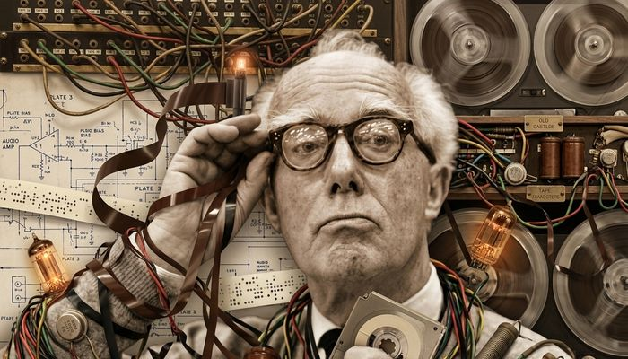

Valls → CambridgeRobert Gerhard
1896, Valls (Tarragona) — 1970, Cambridge
Únic alumne espanyol d'Arnold Schönberg. Considerat el compositor espanyol més rellevant del segle XX juntament amb Manuel de Falla. Exiliat a Anglaterra des de 1939, esdevingué el primer compositor de música electrònica a Gran Bretanya, creant més de 20 obres per cinta entre 1954 i 1967.
- The Prisoner (1954): Primera obra de teatre amb música electrònica anglesa.
- King Lear (1955): Partitura revolucionària per a la Royal Shakespeare Co.
- Sinfonia nº 3 "Collages" (1960): Cinta magnètica i orquestra.
- The Anger of Achilles (1964): Col·laboració amb Delia Derbyshire (BBC). Prix Italia 1965.
- Audiomobiles 1–3 (1958–67): peces abstractes només per a cinta, inclou "DNA" (banda sonora per a Len Lye) i "Sculpture" (escultura sonora de John Youngman).
- Caligula, The Overcoat, Asylum Diary (1959–61): partitures per a drames radiofònics de la BBC.
Formació
Nascut a Valls el 25 de setembre de 1896 (Valls, Tarragona), de pare suïssa-alemany i mare alsaciana. El 1912 va abandonar els estudis comercials (estudi d'harmonia amb Hugo Strauss a Lausanne) i va ingressar a l'Acadèmia Reial de Música de Múnic (1913). A causa de la Primera Guerra Mundial (1914), va tornar a Barcelona, on va estudiar piano amb Enrique Granados (1915–16) i Frank Marshall, i composició amb Felip Pedrell (1916–20), que va inculcar-li un amor profund per la música popular espanyola i la síntesi de tradició folklòrica i simfonia germànica primerenca.
El 21 d'octubre de 1923, després d'haver-li negat l'alumnat de Falla a Granada (considerant-lo massa format), va escriure una extensa carta a Arnold Schönberg, que el va acceptar immediatament; va estudiar amb ell a Viena (1923–25) i Berlín (1925–28), on es va convertir en assistent del professor i l'únic estudiant espanyol de Schönberg. En el moment just de la creació de la sèrie de dotze tons (1921–23), estava sent exposat directament al compositor; aquesta relació es va transformar en amistat fins a la mort de Schönberg el 1951.
Retorn, República i exili
El 22 de desembre de 1929, després d'un concert monogràfic al Palau de la Música Catalana on una soprano va donar la seva veu al públic, va tornar a Barcelona, i va oferir el 1932 el programa al Festival ISCM de Viena (dirigit per Anton Webern), que va ser aclamat amb elogi, amb el telegrama de felicitació del president Macià. Durant la Segona República, va exercir com a director del departament de música de la Biblioteca de Catalunya, organitzador d'activitats d'obertura de música contemporània i traductor de textos clau (Scholz, Riemann, Scherchen).
El gener de 1939, amb la caiguda de Barcelona, es va exiliar a la frontera francesa amb sa esposa Leopoldina Feichtegger ("Poldi"); gràcies al contacte del seu musicòleg Edward J. Dent, es va instal·lar a Cambridge, on va romandre fins a la mort el 1970. La dictadura va ignorar la seva música des de 1939 fins a la transició democràtica. El 1960, va adquirir la ciutadania britànica.
Pionerat electrònic a la BBC
El 1954, amb "The Prisoner", l'obra esdevenia la primera obra teatral anglesa amb música electrònica, i el 1955 King Lear, per a la Royal Shakespeare Company, el va marcar com el primer compositor electrònic britànic. Durant el decenni de 1960, va ser el compositor anglès amb accés a BBC Radiophonic Workshop (establert el 1958 a Maida Vale), col·laborant amb Desmond Briscoe, Delia Derbyshire i Dick Mills, i va crear més de 20 obres electròniques amb el suport de William Glock, director de música de la BBC.
L'Audiomobile 3 "Sculpture" (1959–63, 67), per exemple, aprofita la ressonància natural del piano per a una escultura sonora de John Youngman i el seu so, i "Claustrophilia" (1966), l'únic punt gràfic de Gerhard, per a la sol·licitud que John Cage per al seu llibre Notations, amb 8 arpes múltiples, 4 ràdios i 2 monitors.
The Anger of Achilles (1963–64), una epopeia radiofónica de 59 minuts per a orquestra, solistes i cor, basada en la Ilíada i planificada amb Delia Derbyshire, va rebre el Prix Italia 1965. En 1968, la Sinfonia nº 3 "Collages" (1960, de la Fundació Koussevitzky) va esdevenir la primera a combinar cinta magnètica i orquestra, i la Sinfonia nº 4 "New York" (1966–67) per a Filharmònica de NY (estrenada el 14 desembre 1967, 125è aniversari, a 9 assaigs, dirigida per William Steinberg, amb el suport de Bernstein) va aplicar la tècnica del "conjunt temporal", dividint el hexacord i prohibint el moviment melòdic.
Altres obres clau
- Lament for the Death of a Bullfighter (1959): basat en el poema de Garcia Lorca per a veu i cinta.
- La Peste (1963–64): cantata èpica sobre Albert Camus per a narrador, sopran, cor i orquestra, amb recursos electrònics.
- Don Quixote (1940–41, 1947–49 revisió): ballet de Cervantes, amb Danses de Don Quijote (1957), una de les seves obres més tocades avui.
- Pandora (1942–45): ballet satíric anti-feixista per a Ballet Jooss i denunciat durant la 2a Guerra Mundial, materialisme, totalitarisme.
- Sinfonia nº 1 "Homenaje a Pedrell" (1952–55): primera sinfonia integralment dodecafònica i serial composta a Espanya (estrenada a Baden-Baden).
- The Duenna (1945–47): òpera en tres actes, basada en R.B. Sheridan, estrenada el 1992 (Zarzuela / Liceu) 22 anys després de la seva mort.
- Trilogia Zodiac (1966–69): Gemini, Libra, Leo, modernitat austera.
- Sinfonia nº 5 (1970, inacabada, Fundació Fromm).
- Cancionero de Pedrell (1941–42): cançons populars, de l'Homenatge al mestre.
- Concert per a violí (1942–43) i Concert per a piano (1951); Quartet de corda nº 1 (1950–55) i nº 2 (1960–62).
- Capriccio per a flauta sola (1949): marca la transició del neoclassicisme espanyol cap a la sèrie dodecafònica.
- Correspondència completa Gerhard–Schönberg (81 cartes, editada per Akal el 2024), testimoni d'una amistat que va durar fins la mort de Schönberg (1951).
Arxius i reconeixements
Bibliotecari britànic (CBE, 1967), Prix Italia 1965, Doctor Honoris Causa King's College Cambridge (1968), el 5 gener 1970 a conseqüència d'atac de cor. Més de 600 cintes i fons s'han conservat a la Universitat de Cambridge, a l'Institut d'Estudis Vallencs (Valls) i a la Biblioteca de Catalunya. Va recuperar-se el 1984 a Palau de la Música (dirigit per Ros-Marbà, 1992, òpera).
La síntesis Gerhard representa un cas únic: folclor català (Pedrell) + dodecafonisme (Schönberg) + electrònica (BBC). "El compositor nacionalista de l'era post-Pedrell continua amb la seva música; no és paral·laxi", com apunta el musicòleg Calum MacDonald.
Training under Pedrell and Schönberg
Born in Valls (Tarragona) on 25 September 1896 to a Swiss-German father and Alsatian mother, Gerhard abandoned business studies in Munich in 1913 for music. Forced home by WWI, he studied piano with Enric Granados (1915–16) and Frank Marshall, then composition with Felip Pedrell (1916–20), who instilled a lifelong fusion of Catalan/Spanish folk material with European symphonic tradition.
After Manuel de Falla declined to teach him (considering him too advanced), Gerhard wrote to Arnold Schönberg in 1923 and was accepted immediately, studying in Vienna and Berlin (1923–28) as his only Spanish pupil and, later, assistant — becoming part of the Second Viennese School just as the twelve-tone method was being developed.
Republic, Civil War and exile
Back in Barcelona, his 1929 concert at the Palau de la Música and the 1932 Vienna ISCM premiere (conducted by Anton Webern) brought international recognition. During the Republic he directed the music department of the Biblioteca de Catalunya. In January 1939, as Barcelona fell, he fled to Cambridge, England, where he lived until his death; Franco's regime ignored his music entirely until the 1975 transition to democracy.
Britain's first electronic composer
From 1954 to 1967 Gerhard produced over 20 tape works — theatre scores, radio drama, film music and pure electroacoustic pieces — becoming the only established British composer granted regular access to the BBC Radiophonic Workshop (founded 1958), working alongside Desmond Briscoe, Delia Derbyshire and Dick Mills. His archive of 600+ tapes is held at Cambridge University Library.
Legacy
CBE (1967), Prix Italia (1965) and an honorary doctorate from Cambridge (1968) crowned a career that fused Catalan folklore, Schoenbergian dodecaphony and BBC-era electronics — a synthesis musicologist Calum MacDonald compared to Béla Bartók's achievement in Hungary. He died in Cambridge on 5 January 1970.